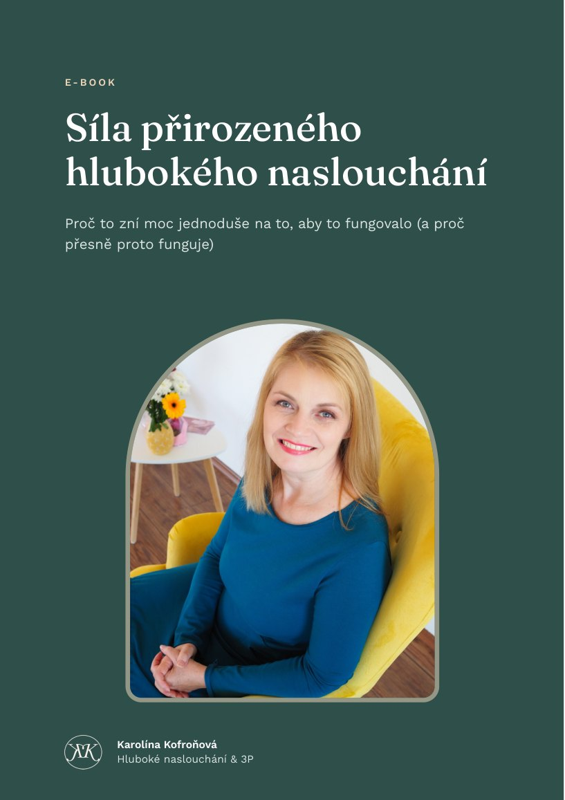

Proč to zní moc jednoduše na to, aby to fungovalo (a proč přesně proto funguje).
Po zadání e-mailu ti pošlu e-book a čas od času e-mail s tipem k naslouchání nebo pozvánkou na workshop či program. Souhlas můžeš kdykoli odvolat odkazem v každém e-mailu. Podrobnosti najdeš v zásadách zpracování osobních údajů.

Znáš to? Máš hlavu těžkou přemýšlením o problému a hledáním řešení. A když tě řešení napadne, řekneš si: „To je moc jednoduché, to nemůže fungovat.“ Jako bys čekal/a, že řešení a změna s ním spojená musí být těžká, složitá, dlouhá a plná dřiny.
Taky jsem si to myslela. V e-booku se dozvíš, co jsem objevila, když jsem se potkala s hlubokým nasloucháním, a proč je právě jeho jednoduchost jeho síla.
Jak jsem se k hlubokému naslouchání dostala, co mi na něm došlo a co říkají lidé, kteří ho na workshopech zažili.
Konec teorie, trocha praxe. Jednoduchý experiment, který si můžeš vyzkoušet při příštím rozhovoru.
„Bylo pro mě zvláštní zjistit, že naslouchání je tak jednoduché. Mohla jsem jen sedět a mlčet a přesto se to dělo. Bylo to moc příjemné.“
— účastnice workshopu
Přidej se k programu Řekni svému štěstí ANO, nebo se podívej na termíny workshopů Česko naslouchá.